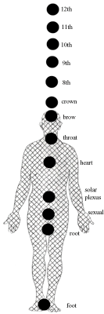

Note: You may find this on line article a bit technical, however I have posted it on the website to assist healers in this area. It also contains some useful information for the casual reader.
|
 |
Advanced Spiritual Chakra System Chakra 12 - Connection to the Monadic level of divinity, advanced spiritual skills, ascension, connection to the cosmos and beyond Chakra 11 - Pathwork to the Soul, the individual's ability to acquire advanced spiritual skills (travel beyond the limits of time and space, teleprotation, bi-location, instantaneous precipitation of thoughts, telekinesis in some cases) Chakra 10 - divine creativity, synchronicity of life; the merging of the masculine and feminine within, unlocking of skills contained in the ninth chakra Chakra 9 - soul blueprint (the individual's total skills and abilities learned in all the life times) Chakra 8 - energy center of divine love, of spiritual compassion and spiritual selflessness, your karmic residue, activates spiritual skills contained in the seventh chakra, Chakra 7 - (crown chakra) Traditionally your connection to the divine (Atmic level of divinity), contains programs to be used by 8th chakra including the release of basic psychic skills (telepathy, seeing aura, lucid dreaming, out of body travel, healing) |
Besides the normal Chakra Energy System there exists an extended chakra system, which is just now coming into humanity's awareness. This energy system is latent in most people; however, as more people advance spiritually, this extended energy system begins to kick in. This extended system is the next step in the spiritual evolution of the planet. Once, a long time ago, the Great Masters were of the few to access and use this powerful energy system. Now, the time has come for others to become aware of this system and reap the rewards of using it in your daily and spiritual lives.
The present understanding of the chakra system gives you seven plus one (foot to crown). As you will recall in our last chapter, the extra chakra (chakra zero) is your Earth- grounding center, and it is located between the balls of your feet. Now, above the crown chakra are four more, numbered eight to twelve. The main purpose of these extended chakras is to enable the individual to tune into his or her inner god-self, the divine Will, and even the galactic community that surrounds and supports the earth in its evolution.
The first chakra group (zero to seven) are meant to help you with your development in regards to the Earth; they help you to become one with the planet. Then, the next five (eight to twelve) help you to become one with the universe. Your awareness is slowly being moved away from your center (your own self) and being moved outward to encompass the larger framework of other peoples, realities, and divinity itself. In this way, you become more than you were before and more perfect too. As you stop focusing on yourself and begin to focus on these larger energies, you move out of your small world and step into a new universe where almost anything is possible. From a reality creating standpoint this movement in possibilities is very, very powerful.
One of the things that the extended chakra system aids in is the breaking down of the self within the confines of time and space. To move outward into other dimensions and realities is to come face to face with the idea that the physical Earth is just one place of many that you inhabit; that in the more vast regions of the Universe, you have existences that are just as rooted as is your present Earthbound cohabitation. There are things that you do in these other realities, just like you do here on Earth, and these things are just as significant as your physical lives. Furthermore, when you begin to glimpse these other realities and see what is happening, a new picture of what is developing begins to take shape. You realize that all your existences are like individual musical instruments in a great orchestra that you are directing and creating. You see yourself as a being that transcends time and the physical body.
Now to continue, each spiritual chakra, besides aiding in your own energy development and well being, helps you to touch a particular portion of this more vast Universe. Each spiritual chakra opens up a corresponding doorway to another portion of the great vastness that is "The Creator". There is a natural order to each chakra in that the opening of one leads very gently to the opening of the next. Because of this ordering, these centers will awaken one by one with each center becoming more alive as another, higher one, begins to kick in.
There is a kind of pattern to this opening, if you were to observe it from a perspective of time. Generally, the 8th center will open first, with a delay before another expansion occurs. Then, after this delay, the 9th will open and the 10th will show just a glimmer of activity. At this point, the 8th center will expand more. Then, when the 10th center actually starts to open, the 9th center will experience another expansion with the 8th center expanding even further. The next octave will have the 11th center expanding with the 12th center showing just a glimmer of activity. Then the process repeats into the lower spiritual chakra. It's a kind of wave effect, with each center opening up and waving its energy down into the other centers forcing them to open up more.
Because of the way that these centers awaken, it is a good idea to work with this chakra system from the ground up, so to speak. In this way, the natural awakening of the spiritual senses will take place in order, and you will not have to contend with overloading yourself or your patient. From a healing standpoint this is a good thing to remember. If you are not sure which spiritual centers are active then always clear each center starting from eight and going toward twelve. Working in this manner you will feel increasing resistance as you approach the spiritual chakras that are not yet open. The idea is to avoid opening up a center prematurely, which is difficult to do anyway, as there are several safeguards in place that keep just this thing from happening. But, by becoming aware of the feel for these centers, in time, you will quickly be able to access a person's spiritual position and know what is going on in that person's life and just how to help them. As you will see, knowing what spiritual chakras are open will give you great insight into what lessons the individual is dealing with. Unlike the lower centers, there is a plan to their opening and the gifts and lessons that are bestowed on the individual are carefully guided.
Sometimes a particular spiritual chakra will not awaken. Even with the octave like nature of the spiritual chakra's awakening, it is possible for one to be bypassed. For example, the 9th center could become blocked from opening because of some structural abnormality in the soul blueprint. When the 10th center begins to awaken, as it will, it will pass energy on to the lower centers. If the 9th is blocked, that energy will pass by it and go into the 8th. The 8th will then expand. What you will have, here, is an open 10th center, with a blocked 9th center and an open 8th center.
Generally, the even numbered centers are fluidic (8, 10, 12) and tend to pass energy, even if they are closed to some extent. However, they do tend to shutdown completely when there is a problem with them. Once you clear up an even numbered center, it begins to work. You usually do not have to go back into it later on to do more healing work on it. On the other hand, you will find that the odd numbered centers (9, 11) tend to develop (or have) various kinds of blocks in them. They will not shut down completely, like an even numbered center will, but rather, these blocks keep the center from operating at full potential or, at the very least, operating strangely. For this reason, you may find that clearing the odd number centers will become more common in your healing work.
You see! The odd centers tend to have hardwire problems, so to speak. In your clearing and restructuring work of a typical odd numbered center, you will have to, literally, find the improper connection and rewire it to where it should be. If you are clairvoyant and can see on the finer planes of manifestation, while doing a healing on an odd numbered center, you will think that you are working on some kind of intricate electronic circuit. You may see what looks like a loose or improper filament and see this filament being removed and set onto the correct pathway.
These improper connections tend to develop due to the reincarnation process. If a lifetime is not properly cleared, after the soul has moved on to the next incarnation, certain energy strands do not get wired properly in these odd numbered spiritual chakras. As you evolve through the reincarnation process, you actually construct and wire up these odd energy centers yourself. With a completely flawless reincarnation cycle, these odd centers assemble in the proper fashion (with flawless I mean a set of incarnations where the lacks of one are properly balanced by the abundances of another). Now, typically, when these chakras start to awaken, then, they should do what they are supposed to do. However, from improperly cleared lifetimes in the reincarnation cycle, some of these connections can be either left out or wired incorrectly. When these centers begin to open, they misfire and don't start properly. Part of the healing process, then, is to go in and rewire that chakra so that it can operate as it is supposed to. Naturally, the act of rewiring that chakra will release that particular life experience and free the individual from its corresponding chains.
These kinds of trauma are not your typical life stuff. They are behavior patterns of a multi-lifetime thing. For example, reincarnating into a body that has poor circulation, time and time again, is a sign of an improperly cleared lifetime, at some point. In this hypothetical case, one of the odd numbered spiritual centers (most likely the 9th, the Karmic blueprint center) has a filament set in the wrong place. This incorrect filament usually shows itself when the individual begins to ascend and that spiritual chakra begins opening. The removal or the resetting of the improper filament to its correct place will not only restore the chakra, but it will enable the individual to reincarnate in a body more suitable, should that person reincarnate again. At the very least, it will restore that person's present body functioning to normal.
Permanent, very powerful body healings can be accomplished by working with the odd spiritual chakra. These healings are almost always karmic in nature and the individual's life will surely be different afterward. A more rapid change in body, mind, and soul, of an individual that is awakening to his/her spirituality, is very common because these odd numbered centers are being awakened and many of these improper connections are being reworked and cleared. Prior to this ascended state, clearing a particular karmic pattern would required the individual to reincarnate and go through the life process to rewire that filament. However, as the planet evolves and more people come into their spiritual awareness, these energy centers open up and enable a kind of healing and a cleansing of the soul that has not been known for eons.
Now, the even numbered spiritual chakras (8,10,12) are a bit different from the odd ones. These centers deal with fluidic states of being. They also deal with spiritual knowledge and its proper use in the cosmos. But more importantly, they also are responsible for implementing the programming from the previous chakra. For example, the 8th chakra is responsible for processing the programs contained in the 7th. The 10th is responsible for processing the programs in the 9th. The 12th is responsible for processing the programs in the 11th. Therefore, when a particular odd center (7, 9, 11) is functioning properly, but there seems to be a problem in getting the individual to implement that proper patterning, then the corresponding higher, even numbered (8, 10, 12) chakra needs to be looked at more closely.
If you find that an even numbered chakra has shutdown, the cause is most likely from some kind of fear within the individual. For example, the fear to face ones karmic residue will cause the 8th center to remain closed. The programs from the 7th center will not be able to implement, and, thus, the individual will block the ascension process (the 7th center contains the programs that guide the individual toward ascension). It is only when a person is ready to face who and what they are -- over many lifetimes -- that the 8th center will open up. The release of this fear opens the door so that that chakra can open and so that the programs contained in its odd numbered twin can be implemented.
So, a good understanding of what each spiritual chakra and its relationship with its twin is necessary to see where the problem may lie. For example, if an ascending person has a fear of leaving the body, this fear will keep the 12th chakra closed. They will be unable to take advantage of the programs in the 11th chakra, which deal with the pathways of the soul, and will not be able to travel consciously outside of the body into the cosmos and beyond. In this instance, a clearing of this fear will be necessary, so that this energy center can fire, and the individual can project free of the body and take full use of this ability.
On the other hand, using the above example again, if that same person can project out of the body but is merely unable to travel into the past, then the 12th chakra is functioning properly. The defect, here, lies in an improperly wired 11th chakra, which is blocking the individual from being able to travel into the past. A filament in the 11th chakra is wired improperly, so the individual does not have the proper access to this information. He can travel out of the body, because some of those programs are usable and the 12th center is operating, but he can not avail himself of that one aspect, the travel into the past.
As you can see, a pattern in diagnosing these spiritual chakras is developing here. As we get into the specifics of each spiritual chakra, you will be able to look at a spiritually awakened person and tell just what chakra has the problem and what the remedy is. In future I will be getting into the specifics of each spiritual chakra, its function, its diagnosis, and the ways to heal and awaken that center.